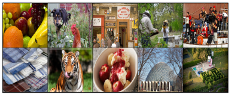
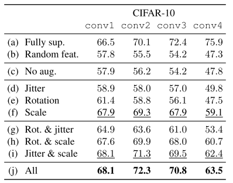
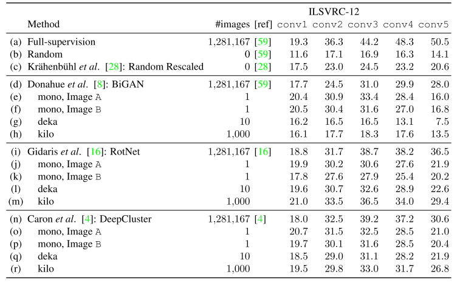

Summary概述
有趣的新发现，没有引入新方法
神经网络的较浅层（前几层）可以仅用极少量数据、图片进行无监督学习， 仅用一张也行（进行大量数据扩充）， 学习到的特征、权重不亚于用大量数据的监督学习。
问题： 如作者所述，少量图片就能把较浅层训练得足够好， 这里的“足够好”是怎么比较的？ 比如类似迁移学习transfer learning？但替换较浅几层的权重？
回答： linear probes， 线性探测， 基于学习好的神经网络（比如前1-k层， k<<n)，训练一个线性分类器， 比较线性分类器的分类正确率。
推论(证实)：神经网络浅较层的泛化本质、内在(the very generic nature)， 不需要使用大数据集进行训练。
目标
- 自监督学习下的极端低（少）数据情形(regime）， 即数据扩充（data augmentation）方法
- 研究哪些自监督、无监督学习方法能应用于少数据情形
方法
数据扩充
原使用 $d$ 张图片训练， 现在定义 $N \ll d$ 张图片， 其他的 $d-N$ 张都是扩充图片。目标是 $N=1$
-
小块扩充， 从原图( $H \times W$ ) 随机选若干小图片( $h \times w$ )，约束条件： $$ \beta \leq \frac{w h}{W H}, \quad \gamma \leq \frac{h}{w} \leq \gamma^{-1} $$
-
旋转扩充， $ \alpha \in (-35, 35) $ 度
-
色彩扩充， RGB线性颜色变换
-
色彩噪音
实例
并不是限定使用原数据集里的一张或几张图片， 比如 CIFAR10 的图片非常小， 就没法进行小块扩充。 作者测试了两张图， 还有一组10张图：


表示学习方法
生成模型
Bidirectional Generative Adversarial Networks (BiGAN)
旋转
RotNet
聚类
DeepCluster
实验
线性探测
基于固定的训练好的特征表示，训练线性分类器。 显然， 学习到的特征表示决定了分类质量。


结果显示， 无监督学习得到的 Conv1 第一个卷积层甚至比监督学习还好， 前两三层有提高， 然后下滑， 说明无监督学习对高抽象的特征学习不佳。
未来方向
- 0图学习， 使用生成的不规则零碎图片学习
- 找出或优化出更完美的单图，可以称之为原型图
补充：
显然， 浅层卷积效果好了， 就自然有两个问题：
- 能否不用这么多扩充的图片， 卷积层本身就应该自动匹配到各局部特征， 而且应该色彩变化不敏感， 旋转角度能否就-30、-15、0、15、30 这么5张， 为什么要这么多。
- 与监督学习的高层特征区别在哪里
对照
data augmentation： 数据扩充、数据增强、数据增广
low-data regime: 对不上号， 瞎猜一个 低（少）数据情形
linear probes: 线性探测
this man is lazy, nothing left